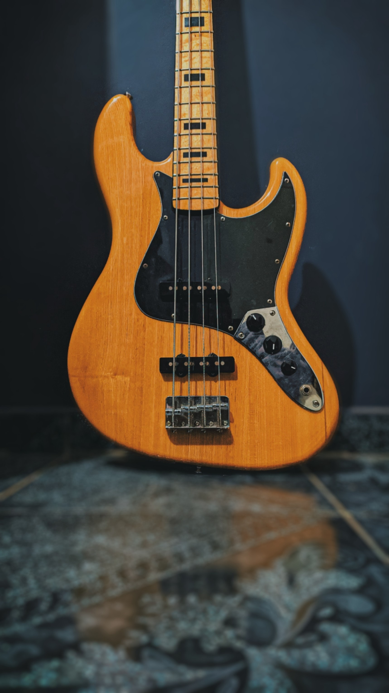

The bass guitar, electric bass or simply bass, is the lowest-pitched member of the guitar family. It is a plucked string instrument similar in appearance and construction to an electric or an acoustic guitar, but with a longer neck and scale length, and typically four to six strings or courses. Since the mid-1950s, the bass guitar has largely replaced the double bass in popular music. The bass guitar is a stringed instrument played primarily with the fingers (either by plucking, slapping, popping, or tapping) or using a pick. Bass guitarists provide the low-pitched basslines and bass runs in many different styles of music ranging from rock and metal to blues and jazz.
In the 1930s, musician and inventor Paul Tutmarc of Seattle, Washington, developed the first electric bass guitar in its modern form, a fretted instrument designed to be played horizontally. The 1935 sales catalog for Tutmarc's company Audiovox featured his "Model 736 Bass Fiddle", a solid-bodied electric bass guitar with four strings, a 30+1⁄2-inch (775-millimetre) scale length, and a single pickup. Around 100 were made during this period. Audiovox also sold their “Model 236” bass amplifier. In the 1950s, Leo Fender and George Fullerton developed the first mass-produced electric bass guitar.
With the explosion in popularity of rock music in the 1960s, many more manufacturers began making electric basses, including Yamaha, Teisco and Guyatone. Introduced in 1960, the Fender Jazz Bass, initially known as the "Deluxe Bass", used a body design known as an offset waist which was first seen on the Jazzmaster guitar in an effort to improve comfort while playing seated. The J-bass features two single-coil pickups. Pickup shapes on electric basses are often referred to as "P" or "J" pickups in reference to the visual and electrical differences between the Precision Bass and Jazz Bass
